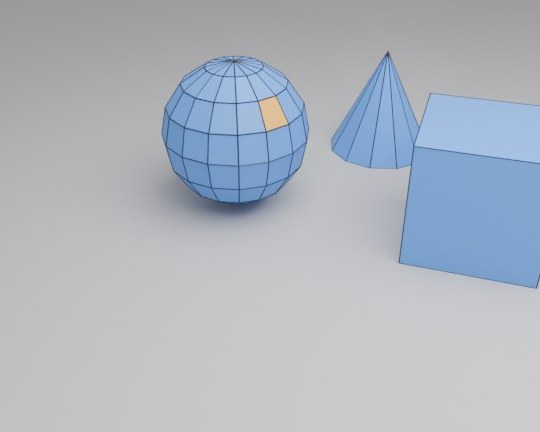
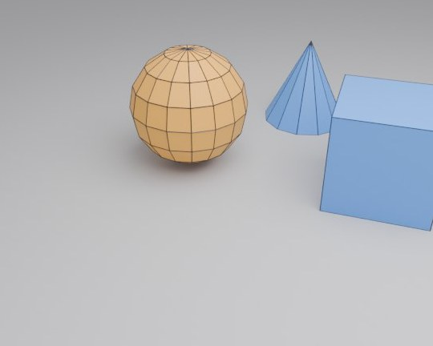

Bonus lesson
Select Linked
Select Linked selects the geometry that is connected to what you already selected. It works in Edit Mode. Find it under Select › Select Linked › Linked, or press Ctrl-L.


When it helps
The manual says this is often useful when a mesh has disconnected, overlapping parts, where isolating a part any other way would be tedious. Select one piece, press Ctrl-L, and the whole piece is selected.
Delimit
To get more control, turn on delimiters in the Adjust Last Operation panel. The selection then stops at seams, sharp edges, materials or UV islands.
Pick Linked
The manual also describes Pick Linked. It selects connected geometry directly under the cursor instead of using your existing selection. Press L to select, or Shift-L to deselect, the linked geometry under the cursor.
Other items in the same menu
The manual lists two more entries under Select Linked. Shortest Path (Ctrl-LMB) selects the path between the active element and the one you click. Linked Flat Faces selects connected faces with a similar angle.
Read the manual page on Select Linked.
Try it
This exercise is our own suggestion and has not been run step by step in the GUI. Add a UV sphere and a cube, select both and press Ctrl-J to join them into one object. Enter Edit Mode, switch to Face select mode and click one face of the sphere. Press Ctrl-L to select the whole sphere. Then hover over the cube and press L. Use Ctrl+Z to undo.